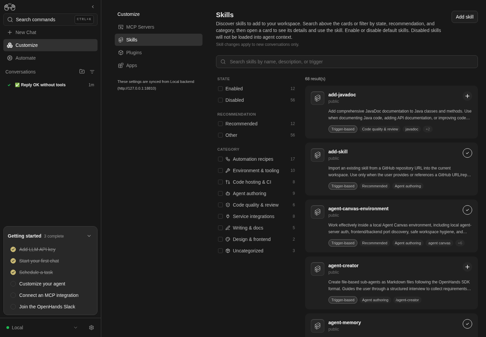
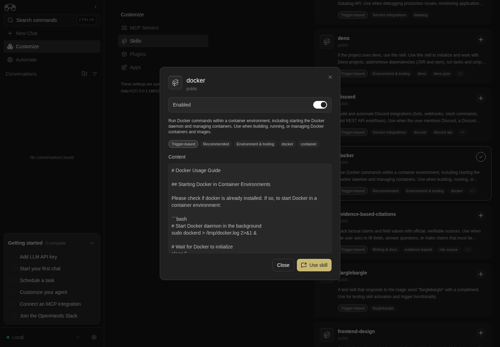

How to get to it
- Sidebar Customize (
sidebar-skills-link, goes to/customize, which redirects to/mcpon desktop), then Skills in the Customize navigation (sidebar-extensions-/skills). - Direct URL
/skills, with optional filters:/skills?q=docker&state=enabled&recommendation=recommended&source=project&category=agent-authoring&type=knowledge. - Command menu (
Control+k/Meta+k): searching "Skills" lists only Customize ("Browse skills, plugins, and integrations."), which lands on/mcp; then click Skills. There is no direct Skills command. - Phone:
/customizeshows the Customize hub (extensions-mobile-hub) with a Skills row; on/skillsthe header back button (sidebar-mobile-back-button) returns to the hub. - Install banner: inside a conversation, after the agent ran
/add-skill <GitHub URL>(local backend only). - Project skills: a
SKILL.mdcommitted under<workspace>/.agents/skills/<name>/in the folder picked with Open Workspace on Home (Local Repo or New Worktree mode); the conversation's chat shows Skill Ready when a message triggers one. - Cloud: Customize → Skills on a Cloud backend (external link).
Before you start
Start with the common launch and health checks, then follow this family’s preconditions in order. Recipes share the fixtures and state named below.
Preconditions:
- Baseline state (launched, doctored,
onboard --skipdone); desktop viewport unless a bullet says otherwise. - A fresh run lists only the bundled catalog,
<N>skills, all with sourcepublic.<N>is the catalog length the checkout bundles: runnode --input-type=module -e "import {SKILLS_CATALOG} from '@openhands/extensions/skills'; console.log(SKILLS_CATALOG.length)"in the checkout (68 with@openhands/extensions0.29.0, #17998). The Source and Type facet groups stay hidden until a personal/project skill exists.add-javadocandflarglebargleare off;dockeris on (recommended). F18.skill-in-chat,F18.toggle-local,F18.copy-sourceandF18.install-bannerneed an active LLM profile (control-openhands llm preset deepseek).F18.install-banneralso needs the agent to reach github.com.- Personal skill fixture (arranged through the agent, not proof): run
control-openhands conversation start --prompt 'Use one shell command to create the file ~/.agents/skills/qa-hello/SKILL.md (create the folders) with exactly these 7 lines: "---", "name: qa-hello", "description: QA test skill that answers qa-ping with QA-PONG-7731.", "triggers:", "- qa-ping", "---", "When the user says qa-ping, reply with exactly QA-PONG-7731 and nothing else." Then reply done.' --wait --timeout 240. Afterwards/skillsshows<N+1> result(s)and aqa-hellocard (type pillAuto-discovery), and the Enabled facet count goes from 12 to 13. - Project skill fixture for
F18.project-skill(arranged, not proof; no model needed), in this family's own repo so the commit never lands in F08'sqa-repo:control-openhands fixture git-repo --name qa-f18-repo, thencontrol-openhands fixture skill --repo qa-f18-repo --name qa-f18-skill --trigger qa-f18-ping --commit: it writes<run>/workspace/qa-f18-repo/.agents/skills/qa-f18-skill/SKILL.md(scopeproject) and commits it in the fixture repo (committed.shaandcommitted.messageAdd qa-f18-skill skill;git -C "$OH_VERIFY_RUN/workspace/qa-f18-repo" log --onelinelistsAdd qa-f18-skill skillaboveInitial fixture commit). A re-run reports the samecommitted.shawithcommitted.unchangedtrue. Without--committhe file stays uncommitted, and a New Worktree checkout holds only committed files. A fixture skill's name must not be a substring of its trigger (see Gotchas). F18.skill-deletedcreates its own personal fixture right before its bullet (control-openhands fixture skill --name qa-gone --trigger qa-farewell, written into the run's private HOME) and deletes it inside the bullet, so the counts in the other bullets are unaffected.F18.cloud-linkneeds an OpenHands Cloud backend and account (blocked in a sandbox).
Behavior inventory
22 stable behavior IDs and their expected behavior
F18.pagethe page shows the title, description, the notice "Skill changes apply to new conversations only.", an Add skill button, a result count, the facet rail and the card grid. (Empty state "No skills found." and loading skeletons are not reachable on a local backend.) Read recipe ↓F18.searchtyping filters cards by name, description, content or trigger; after 300 ms the query is mirrored to?q=without a new history entry; the X clears it; no match shows "No skills match your search." Read recipe ↓F18.search-historybrowser Back/Forward put the matching query back into the search box. Read recipe ↓F18.facetsthe desktop facet rail (State, Recommendation, Source, Category, Type) filters with per-row counts, writes canonical URL params, disables zero-count rows and offers Clear filters; deep links apply and unknown values are dropped. Read recipe ↓F18.filters-modalbelow 768 px the rail is replaced by a Filters button with an active-count badge that opens the same facets in a modal with Clear filters and Close. Read recipe ↓F18.cardeach card shows icon, name, source, a two-line description and pills; extra pills collapse into a+Npopover; click, Enter or Space opens the detail modal. Read recipe ↓F18.copy-sourcepersonal and project skills (path sources) have a copy-path button on the card and in the modal that flips to "Copied to clipboard" for 2 s; built-in skills (sourcepublic) have none. Read recipe ↓F18.togglethe card's plus/check toggle switches a built-in skill on or off; the choice survives a reload (enabled_skillsallow-list on a local backend). Read recipe ↓F18.toggle-localswitching a personal/project skill off writesdisabled_skills; new conversations then do not load it, and do again once it is back on. Read recipe ↓F18.toggle-errora failed save shows an error toast and nothing is persisted. Read recipe ↓F18.skill-in-chatan enabled skill is loaded into new conversations and fires on its trigger; a disabled one is not. Read recipe ↓F18.project-skilla skill committed under<workspace>/.agents/skills/<name>/SKILL.mdis loaded into every conversation started in that workspace, in Local Repo and New Worktree mode alike, and its trigger word activates it (the chat shows a Skill Ready row naming it); workspace skills are not listed on the Skills page. Read recipe ↓F18.skill-deleteda personal skill whose folder was deleted disappears from the Skills page after a reload and is not loaded into new conversations: its trigger word activates nothing. Read recipe ↓F18.personal-skill-dirspersonal skills load from both user folders:~/.agents/skills/<name>/SKILL.mdand the persistence folder'sskills/<name>/SKILL.md(~/.openhands/skills, which a Canvas stack moves to$OH_PERSISTENCE_DIR/skills). Each shows on the Skills page with its path and fires on its trigger in new conversations. Read recipe ↓F18.detail-modalthe detail modal shows source, an Enabled/Disabled switch, description, pills and the read-only content; switching off disables Use skill. Read recipe ↓F18.detail-closethe X, Close, Escape and a backdrop click close the detail modal. Read recipe ↓F18.detail-pillsthe modal shows the full pill set (type, category, recommended, license, compatibility, version, triggers); pills that do not fit collapse into a+Nbutton whose popover lists the rest without closing the modal. Read recipe ↓F18.use-skillUse skill closes the modal, opens/conversationsand pre-fills the composer with/<skill-name>. Read recipe ↓F18.add-skill-modalAdd skill opens an instructions-only modal with a copyable/add-skillexample (which must point at an existing skill), steps, URL formats, storage notes and a docs link; Close, X and Escape close it. Read recipe ↓F18.phoneat 390 px the page, cards and both modals fit without horizontal overflow;/customizeshows a hub that links to Skills and the header back button returns to it. Read recipe ↓F18.cloud-linkwith a Cloud backend the Customize Skills item opens the Cloud skills page in a new tab instead of/skills(blocked here). Read recipe ↓
Readable recipes
Read each script from top to bottom. Code is copied from the map; prose gives the action, expected observation, and conditions. <id>, <run> and similar placeholders stand for values from your own run. Short forms such as browser count continue the same control-openhands invocation; they are kept as documented.
Expected observations describe the recipe’s contract. Captures below selected recipes show representative real states from this snapshot; they do not mark every mapped behavior as passed. Follow cleanup before moving to another family.
No recipes match. Try another word or a behavior ID.
Open from the sidebar #
- NoteFrom
/run - Check
control-openhands browser click 'testid=sidebar-skills-link' --expect-url '/mcp(\?|$)' - Check
control-openhands browser click 'testid=sidebar-extensions-/skills' --expect-url '/skills(\?|$)' - Check
control-openhands browser text 'testid=skills-settings-description'(
Discover skills to add to your workspace. Search above the cards or filter by state, recommendation, and category, then open a card to see its details and use the skill. Enable or disable default skills. Disabled skills will not be loaded into agent context., describing this layout since #18035), - Check
control-openhands browser text 'testid=skills-new-conversation-notice'(
Skill changes apply to new conversations only.) and - Check
control-openhands browser text 'testid=skills-result-summary'(
<N> result(s)on a fresh run). - Do
control-openhands browser screenshot --feature F18.page --name desktopshows the Customize nav, the facet rail and the card grid.

Sidebar Customize and Skills navigation opens the catalog with facets and result count.
Catalog browse only; no skill enablement or invocation asserted.
How this screenshot was taken
agent server: 1.53.0 · automation: 1.19.0 (launcher default) · canvas: 1.26.0
control-openhands browser goto /
control-openhands browser click testid=sidebar-skills-link --expect-url '/mcp(\?|$)'
control-openhands browser click testid=sidebar-extensions-/skills --expect-url '/skills(\?|$)'
control-openhands browser text testid=skills-result-summary
control-openhands browser screenshot --feature F18.page --name catalogCommand-menu entry #
- NoteFrom
/run - Do
control-openhands browser press Control+k - Do
control-openhands browser type 'testid=command-menu >> role=combobox' Skills - Check
control-openhands browser snapshot 'testid=command-menu'(one option,
Customize Browse skills, plugins, and integrations. Go), - Do
control-openhands browser press Enter - Wait
control-openhands browser wait-url '/mcp(\?|$)' - Check
control-openhands browser click 'testid=sidebar-extensions-/skills' --expect-url '/skills(\?|$)'
Search #
- NoteOn
/skillsrun - Do
control-openhands browser fill 'testid=skills-search-input' docker - Check
control-openhands browser text 'testid=skills-result-summary'(
6 result(s)on a fresh run: content matches count too) and, a second later, - Check
control-openhands browser url(ends in
/skills?q=docker); - Do
control-openhands browser eval "history.length"is the same before and after typing.
- Do
control-openhands browser fill 'testid=skills-search-input' zzqa-nomatch - Check
control-openhands browser text 'testid=skills-no-match' - Note:
No skills match your search.with0 result(s). - NoteClear with
- Do
control-openhands browser click 'testid=skills-toolbar >> role=button[name="Clear search"]' - Check
control-openhands browser value 'testid=skills-search-input'is empty, the full count is back and
?q=leaves the URL.
Back and forward #
- Do
control-openhands browser goto '/skills?q=docker' - Check
control-openhands browser click 'testid=skill-facet-state-enabled'(pushes
?q=docker&state=enabled), - Do
control-openhands browser fill 'testid=skills-search-input' github - Notewait a second, then
- Do
control-openhands browser back - Check
control-openhands browser value 'testid=skills-search-input' - Note:
docker, URL/skills?q=docker. - Do
control-openhands browser forward - Notegives
githuband/skills?q=github&state=enabled.
Facets #
- NoteOn
/skillsrun - Do
control-openhands browser click 'testid=skill-facet-recommendation-recommended'(URL
?recommendation=recommended,12 result(s)), - Check
control-openhands browser click 'testid=skill-facet-state-enabled'(URL
?state=enabled&recommendation=recommended: canonical order, not click order), - Check
control-openhands browser attr 'testid=skill-facet-state-enabled' aria-checked(
true), - Check
control-openhands browser enabled 'testid=skill-facet-state-disabled'(
false, its count reads0), - Do
control-openhands browser click 'testid=skill-facet-category-agent-authoring'(
8 result(s)), then - Do
control-openhands browser click 'testid=skills-clear-filters' - Note: URL
/skills, all results, and - Check
control-openhands browser count 'testid=skills-clear-filters'is
0.
Source and Type facets #
- NoteWith the
qa-hellofixture, - Check
control-openhands browser text 'testid=skill-facet-group-source'lists
This project 1andBuilt in <N>, andtestid=skill-facet-group-typelistsAuto-discovery 1andTrigger-based <N>. - Do
control-openhands browser click 'testid=skill-facet-source-project' - Notegives
?source=projectand1 result(s); after Clear filters, - Do
control-openhands browser click 'testid=skill-facet-type-agentskills' - Notegives
?type=agentskillsand onlyqa-hello(control-openhands browser eval "[...document.querySelectorAll('[data-testid^=skill-name-]')].map(e=>e.textContent).join(',')"). - NoteClear filters again.
Deep link #
- Do
control-openhands browser goto '/skills?category=bogus&type=knowledge&source=project' - Noteon a fresh run,
- Check
control-openhands browser text 'testid=skills-result-summary'(
0 result(s)) and - Check
control-openhands browser text 'testid=skill-facet-group-source' - Note:
SOURCE,This project 0,Built in <N>. - ExpectA URL selection keeps its group visible even when it matches nothing, and
bogusis ignored. - NoteClear with
testid=skills-clear-filters.
Card and pill overflow #
- Check
control-openhands browser testids 'testid=skill-card-add-javadoc'(name,
skill-source-add-javadoc=public,skill-toggle-add-javadoc, description, pills,skill-triggers-add-javadoc-overflowlabelledShow 2 more), - Do
control-openhands browser click 'testid=skill-triggers-add-javadoc-overflow' - Check
control-openhands browser text 'testid=skill-triggers-add-javadoc-overflow-popover'(
java documentation,document java); - Check
control-openhands browser count 'testid=skill-detail-modal' - Notestays
0. - Do
control-openhands browser screenshot --feature F18.card --name overflow-popover - Do
control-openhands browser press Escape
Keyboard open #
- Do
control-openhands browser focus 'testid=skill-card-docker' - Do
control-openhands browser press Enter - Check
control-openhands browser attr 'testid=skill-detail-modal' data-skill-name(
docker); - Do
control-openhands browser press Escape - Notefocus again,
- Do
control-openhands browser press Space - Check
control-openhands browser count 'testid=skill-detail-modal'(
1). - NoteEscape closes it.

Docker detail modal opens from a focused card using Enter.
The skill is not invoked.
How this screenshot was taken
agent server: 1.53.0 · automation: 1.19.0 (launcher default) · canvas: 1.26.0
control-openhands browser goto /skills
control-openhands browser focus testid=skill-card-docker
control-openhands browser press Enter
control-openhands browser screenshot --feature F18.card --name docker-detailCopy the source path #
- NoteWith the
qa-hellofixture, - Check
control-openhands browser attr 'testid=skill-source-qa-hello' titleis the full
…/.agents/skills/qa-hello/SKILL.mdpath. - Do
control-openhands browser click 'testid=skill-copy-source-qa-hello' - Check
control-openhands browser attr 'testid=skill-copy-source-qa-hello' aria-label(
Copied to clipboard;count 'testid=skill-detail-modal'stays0), - Check
control-openhands browser clipboard(
textis the same fullSKILL.mdpath) and, after 2 s, the sameattr(Copy source path). - NoteIn the modal (
control-openhands browser click 'testid=skill-card-qa-hello') - Do
control-openhands browser click 'testid=skill-modal-copy-source-qa-hello' - Noteturns its label to
Copied to clipboardand the modal stays open.count 'testid=skill-copy-source-add-javadoc'is0.
Toggle a built-in skill #
- Check
control-openhands browser attr 'testid=skill-toggle-add-javadoc' aria-checked(
false;aria-labelisEnable skill), - Do
control-openhands browser click 'testid=skill-toggle-add-javadoc'(no modal opens;
aria-checkedturnstrueand the Enabled facet count goes up by one), wait a second, - Do
control-openhands browser reload - Noteand read
aria-checkedagain:true. - Check
control-openhands api GET /api/settings --pick misc_settings.app_preferences.enabled_skillslists
add-javadoc(--pickpaths start insidebody). - NoteTo switch an enabled skill off from its card,
- Do
control-openhands browser hover 'testid=skill-toggle-add-javadoc' - Notefirst (
attr ... data-showing-removeistrue), then click (see Gotchas).
Toggle a personal skill #
- Do
control-openhands browser hover 'testid=skill-toggle-qa-hello' - Do
control-openhands browser click 'testid=skill-toggle-qa-hello' - Notewait a second,
- Do
control-openhands browser reload - Check
control-openhands browser attr 'testid=skill-toggle-qa-hello' aria-checked(
false). - Check
control-openhands api GET /api/settingsshows
disabled_skills: ["qa-hello"]underbody.misc_settings.app_preferencesandenabled_skillswithout it. - Wait
control-openhands conversation start --prompt "qa-ping" --wait --timeout 240 - Check
control-openhands api GET '/api/conversations/<id>/events/search?limit=5' --max-bytes 2000000(id from
conversation start): the userMessageEventhas"activated_skills": []. - NoteBack on
/skills(control-openhands browser goto /skills;conversation startleft the browser on the conversation), click the toggle on again (no hover needed), start anotherqa-pingconversation:"activated_skills": ["qa-hello"]and - Check
control-openhands browser text 'testid=agent-message >> nth=-1'is
QA-PONG-7731;disabled_skillsis[]again.
Skill reaches chat #
- Do
control-openhands browser goto /skills(the previous bullet ends on a conversation),
- Do
control-openhands browser click 'testid=skill-toggle-flarglebargle'(
aria-checkedtrue), then - Wait
control-openhands conversation start --prompt "flarglebargle" --wait --timeout 240 - Check
control-openhands conversation events <id> --kinds MessageEvent --from-start(the user row has
skills: ["flarglebargle"]; theevents/search?limit=5read this bullet used before can miss the user row) and - Check
control-openhands browser text 'testid=agent-message >> nth=-1'(a reply praising how smart the user is).
- Check
control-openhands browser screenshot --feature F18.skill-in-chat --name enabled - NoteSwitch it off again on
/skills(control-openhands browser goto /skills, hover, click;enabled_skillsno longer lists it) and start another conversation with--prompt "flarglebargle. Do not run any tools; reply in one line.": the user row has noskills, and the agent does not praise the user (2026-10-08:Flarglebargle to you too — what would you like help with?).
Project skill in a workspace #
- NoteWith the committed
qa-f18-skillfixture, run - Do
control-openhands browser goto /skills - Do
control-openhands browser reload - Check
control-openhands browser count 'testid=skill-card-qa-f18-skill' - Note:
0(the catalog lists the Agent Server's own skills, not a workspace's). - Wait
control-openhands conversation start --workspace qa-f18-repo --prompt "qa-f18-ping" --wait --timeout 240(note
<repo-skill-id>; itsworkspaceis the fixture's path) and, in the chat it leaves open, - Check
control-openhands browser text 'testid=generic-event-message-title'(
Skill Ready; with a model a second title,Invoked skill qa-f18-skill, can follow, because the agent may also callinvoke_skill), - Do
control-openhands browser click 'role=button[name="Expand"]' - Check
control-openhands browser count 'role=button[name="qa-f18-skill"]'(
1, underTriggered Skill Knowledge:); - Do
control-openhands browser screenshot --feature F18.project-skill --name skill-ready - NoteWith an LLM the agent also obeys the skill, and this is the moment to read it, while the chat is still open:
- Check
control-openhands browser text 'testid=agent-message >> nth=-1' - Noteends with
QA_SKILL_OK; without a key the conversation ends inerrorright after the events below and that reply check is blocked (prerequisite:DEEPSEEK_API_KEY). - NoteAgent side,
- Check
control-openhands conversation events <repo-skill-id> --grep qa-f18-skill --from-start - Notematches the
SystemPromptEvent(its<available_skills>lists<name>qa-f18-skill</name>) and the userMessageEvent(skills: ["qa-f18-skill"], with excerpts showing"activated_skills":["qa-f18-skill"]and the…/qa-f18-repo/.agents/skills/qa-f18-skill/SKILL.mdpath). - NoteNew Worktree: run
- Do
control-openhands workspace open qa-f18-repo --mode new_worktree(it picks the mode in the preview bar's selector and prints
modenew_worktreeandpreviewqa-f18-repo/New Worktree;control-openhands browser text 'testid=home-git-control-bar-preview'reads the same two lines), then - Wait
control-openhands conversation start --stay --prompt "qa-f18-ping" --wait --timeout 240(note
<worktree-id>): itsworkspaceis/tmp/conversation-worktrees/<worktree-id>/qa-f18-repo, a worktree of the fixture on branchopenhands/<worktree-id>(read-only check:git -C /tmp/conversation-worktrees/<worktree-id>/qa-f18-repo log --onelinelistsAdd qa-f18-skill skillaboveInitial fixture commit), - Check
control-openhands browser text 'testid=generic-event-message-title'is
Skill Readyagain (and the same reply check applies here, with a key), and - Check
control-openhands conversation events <worktree-id> --grep qa-f18-skill --from-start - Notematches the same events with the worktree's
SKILL.mdpath (aConversationStateUpdateEventcarrying the agent context matches in both conversations too). - NoteRestore the mode:
- Do
control-openhands workspace open qa-f18-repo --mode local_repo(
modelocal_repo,previewqa-f18-repo/Local Repo).
Deleted personal skill #
- Arrange
control-openhands fixture skill --name qa-gone --trigger qa-farewell - Do
control-openhands browser goto /skills - Do
control-openhands browser reload - Check
control-openhands browser count 'testid=skill-card-qa-gone'(
1;control-openhands browser attr 'testid=skill-source-qa-gone' titleis the run's…/private/home/.agents/skills/qa-gone/SKILL.mdpath andcontrol-openhands browser text 'testid=skills-result-summary'counts one result more than before) and - Do
control-openhands browser screenshot --feature F18.skill-deleted --name present - NoteProve it loads:
- Wait
control-openhands conversation start --prompt "qa-farewell" --wait --timeout 240(note
<gone-a>), - Check
control-openhands browser text 'testid=generic-event-message-title'(
Skill Ready) and - Check
control-openhands conversation events <gone-a> --grep qa-gone --from-start - Note: the
SystemPromptEventand the userMessageEventmatch, the latter withskills: ["qa-gone"]. - NoteDelete the folder (outside the UI; it is inside the run):
rm -rf "$OH_VERIFY_RUN/private/home/.agents/skills/qa-gone". - Do
control-openhands browser goto /skills - Do
control-openhands browser reload - Check
control-openhands browser count 'testid=skill-card-qa-gone'(
0; the summary is back to its earlier count), - Wait
control-openhands conversation start --prompt "qa-farewell. Do not run any tools; reply in one line." --wait --timeout 240(note
<gone-b>; with a model, a bareqa-farewellsent deepseek-flash searching the disk for the word, and it quoted the run'sstack.loglineSkill 'qa-gone' triggered by keyword 'qa-farewell', so--grep qa-gonematched 9 tool rows although the skill was not loaded), - Check
control-openhands browser count 'text=Skill Ready'(
0;control-openhands browser screenshot --feature F18.skill-deleted --name absent) and - Check
control-openhands conversation events <gone-b> --grep qa-gone --from-start - Note:
countis0, and - Check
control-openhands conversation events <gone-b> --kinds MessageEvent --from-startshows the user message without a
skillsrow. - ExpectNo model is needed: the skill set is fixed before the first model call.
Both personal skill folders #
- ExpectThe
qa-gonebullet above used~/.agents/skills. - NoteFor the other folder, write a fixture into the stack's persistence folder (outside the UI, inside the run;
fixture skillwrites only~/.agents/skills):mkdir -p "$OH_VERIFY_RUN/private/skills/qa-legacy"and aSKILL.mdthere with the front mattername: qa-legacy,description: QA fixture skill in the persistence-dir skills folder.,triggers: [qa-legacy-ping]and the bodyWhen this skill is active, end your reply with the word QA_LEGACY_OK.($OH_VERIFY_RUN/privateis the Agent Server'sOH_PERSISTENCE_DIR, which replaces~/.openhands). - Do
control-openhands browser goto /skills - Do
control-openhands browser reload - Check
control-openhands browser count 'testid=skill-card-qa-legacy'(
1) and - Check
control-openhands browser attr 'testid=skill-source-qa-legacy' title(
…/private/skills/qa-legacy/SKILL.md). - Wait
control-openhands conversation start --prompt "qa-legacy-ping. Do not run any tools; reply in one line." --wait --timeout 240(note
<legacy-id>): - Check
control-openhands browser text 'testid=generic-event-message-title'is
Skill Ready, - Check
control-openhands conversation events <legacy-id> --kinds MessageEvent --from-startshows the user row with
skills: ["qa-legacy"], and with a model - Check
control-openhands browser text 'testid=agent-message >> nth=-1' - Noteends with
QA_LEGACY_OK(control-openhands browser screenshot --feature F18.personal-skill-dirs --name persistence-dir-skill). - NoteClean up with
rm -rf "$OH_VERIFY_RUN/private/skills/qa-legacy",browser goto /skills,browser reload; the card count is0.
Save failure #
- Do
control-openhands browser goto /skills - Notewait for
testid=skill-toggle-add-javadocand note itsaria-checked(truewhen this follows the toggle bullet, which leftadd-javadocon). - Do
control-openhands service stop agent-server - Do
control-openhands browser click 'testid=skill-toggle-add-javadoc' --timeout 5000(the card flips at once), wait about 2 s (the
PATCH /api/settingsis tried three times before the error shows;browser networklists three502s) and - Check
control-openhands browser toasts --history - Note:
HTTP request failed (502 Bad Gateway): "Bad Gateway: connect ECONNREFUSED 127.0.0.1:<agent-server port>". - Do
control-openhands browser screenshot --feature F18.toggle-error --name toast - Do
control-openhands restart --timeout 240 - Do
control-openhands browser goto /skills - Note:
aria-checkedontestid=skill-toggle-add-javadocis back to the value noted before the click andenabled_skillsis unchanged. - NoteClear the expected 502 noise with
- Check
control-openhands browser errors --clear
Detail modal and switch #
- NoteWith
add-javadocon, run - Do
control-openhands browser click 'testid=skill-card-add-javadoc' - Check
control-openhands browser testids 'testid=skill-detail-modal'(name, source,
skill-modal-enable-row-add-javadoc, description, pills incl. licenseMIT,skill-modal-field-content-add-javadoc,skill-detail-close,skill-detail-use-skill-add-javadoc) and - Check
control-openhands browser enabled 'testid=skill-detail-use-skill-add-javadoc'(
true). - NoteSwitch off with
- Do
control-openhands browser click 'testid=skill-modal-enable-row-add-javadoc >> text=Enabled' - Do
control-openhands browser eval "document.querySelector('[data-testid=skill-modal-toggle-add-javadoc]').checked"is
false, the row readsDisabled,enabledon Use skill isfalseand the card toggle behind readsaria-checkedfalse. - Do
control-openhands browser screenshot --feature F18.detail-modal --name disabled - NoteClose, reload: the card stays off and
enabled_skillsno longer listsadd-javadoc.
Close the modal #
- NoteWith
testid=skill-card-dockeropened each time, each of - Do
control-openhands browser click 'testid=skill-detail-modal-close' - Do
control-openhands browser click 'testid=skill-detail-close' - Do
control-openhands browser press Escape - Do
control-openhands browser mouse-click 100 500(backdrop) leaves
- Check
control-openhands browser count 'testid=skill-detail-modal' - Noteat
0.
Pill overflow in the modal #
- Do
control-openhands browser click 'testid=skill-card-add-javadoc' - Check
control-openhands browser text 'testid=skill-modal-pills-add-javadoc'(
Trigger-based,Code quality & review,MIT,Requires Java source files,+3; license and compatibility appear only in the modal), - Check
control-openhands browser attr 'testid=skill-modal-pills-add-javadoc-overflow' aria-label(
Show 3 more), - Do
control-openhands browser click 'testid=skill-modal-pills-add-javadoc-overflow' - Check
control-openhands browser text 'testid=skill-modal-pills-add-javadoc-overflow-popover'(
javadoc,java documentation,document java);count 'testid=skill-detail-modal'stays1. - Do
control-openhands browser screenshot --feature F18.detail-pills --name popover - NoteClose the popover with
- Do
control-openhands browser click 'testid=skill-modal-description-add-javadoc'(popover count
0, modal still open), then - Do
control-openhands browser press Escape - NoteExpected as well: Escape with the popover open closes the popover (as it does on a card); at 0c446b8 it closes neither the popover nor the modal (see Gotchas).
Use skill #
- Do
control-openhands browser click 'testid=skill-card-docker' - Check
control-openhands browser click 'testid=skill-detail-use-skill-docker' --expect-url '/conversations(\?|$)' - Do
control-openhands browser eval "document.querySelector('[data-testid=chat-input]').innerText" - Note:
/docker(the skill name as a slash command), with the modal gone (control-openhands browser count 'testid=skill-detail-modal'is0) and the composer focused (control-openhands browser eval "document.activeElement.getAttribute('data-testid')"ischat-input). - Do
control-openhands browser screenshot --feature F18.use-skill --name prefilledshows
/dockerin the Home composer. - NoteNothing is sent, and the text is applied once: leave and come back without a page load (
control-openhands browser click 'testid=sidebar-automations-link' --expect-url '/automations$', thencontrol-openhands browser click 'testid=sidebar-conversations-link' --expect-url '/conversations(\?|$)') and the samechat-inputeval returns an empty string. - ExpectA
browser goto /would prove nothing here: a page load empties the composer either way.
Add skill instructions #
- Do
control-openhands browser goto /skills(Use skill ends on
/conversations), - Do
control-openhands browser click 'testid=skills-add-skill-button' - Check
control-openhands browser text 'testid=add-skill-modal'(title
Add a skill, the example/add-skill https://github.com/OpenHands/extensions/tree/main/skills/code-review, five steps, "Supported URL formats" with the short formOpenHands/extensions/skills/code-review, "Where skills are stored", theGITHUB_TOKENnote) and - Check
control-openhands browser attr 'testid=add-skill-modal-docs-link' href(
https://docs.openhands.dev/overview/skills/adding#adding-new-skills;targetis_blank). - NoteCopy with
- Do
control-openhands browser click 'testid=add-skill-modal-example-copy' - Note: its
aria-labelbecomesCopied to clipboard,enabledisfalseand - Check
control-openhands browser clipboardreturns the example command; after 2 s it reads
Copy to clipboardagain. - NoteClose with
testid=add-skill-modal-dismiss,testid=add-skill-modal-closeor - Do
control-openhands browser press Escape - Note
count 'testid=add-skill-modal'is0each time. - ExpectThe example points at an existing skill (#18035):
- Do
control-openhands browser goto '/skills?q=code-review' - Check
control-openhands browser text 'testid=skill-source-code-review'(
public) show it in the bundled catalog, whichF18.install-bannerinstalls from that same URL.
Install banner #
- Wait
control-openhands conversation start --prompt "/add-skill https://github.com/OpenHands/extensions/tree/main/skills/code-review" --wait --timeout 300 - Check
control-openhands browser text 'testid=skill-install-restart-banner' - Note:
Installed to this workspace: code-review. Skills load when a conversation starts, so this conversation can't use them yet.plusStart new conversation with this skill. - Do
control-openhands browser screenshot --feature F18.install-banner --name banner - Check
control-openhands browser click 'testid=skill-install-restart-action' --expect-url '/conversations/(?!<id>)[0-9a-f-]+(\?|$)'(
<id>fromconversation start; the lookahead skips the current URL), then - Check
control-openhands conversation status <new id>(the id in the returned URL): its
workspaceequals the install conversation'sworkspacefromconversation start. - NoteBack on the first conversation (
control-openhands browser goto /conversations/<id>), - Do
control-openhands browser click 'testid=skill-install-restart-dismiss' - Notemakes
count 'testid=skill-install-restart-banner'0; after - Do
control-openhands browser reload - Noteit is
1again (dismissal is session-only by design).
Filters modal on a phone #
- Do
control-openhands browser viewport phone - Do
control-openhands browser goto /skills - Check
control-openhands browser visible 'testid=skill-facet-rail'(
false), - Do
control-openhands browser click 'testid=skills-filters-button' - Check
control-openhands browser count 'testid=skill-filters-modal-clear'(
0), - Do
control-openhands browser click 'testid=skill-filters-modal >> testid=skill-facet-state-enabled'(URL
?state=enabled, Clear filters appears), - Do
control-openhands browser screenshot --feature F18.filters-modal --name phone - Do
control-openhands browser click 'testid=skill-filters-modal-done' - Check
control-openhands browser text 'testid=skills-filters-button'(
Filtersand badge1) and the summary (12 result(s)on a fresh run,13 result(s)with theqa-hellofixture). - NoteReopen and
- Do
control-openhands browser click 'testid=skill-filters-modal-clear' - Note: URL
/skillsand the Clear button disappears; Escape closes the modal.
Phone layout and hub #
- NoteAt the phone viewport run
- Check
control-openhands browser bbox 'testid=skills-page'(
pageHorizontalOverflowfalse), - Do
control-openhands browser screenshot --feature F18.phone --name list - Noteopen
testid=skill-card-dockerand - Check
control-openhands browser bbox 'testid=skill-detail-modal'(
insideViewporttrue), Escape, - Do
control-openhands browser click 'testid=skills-add-skill-button' - Check
control-openhands browser bbox 'testid=add-skill-modal'(
insideViewporttrue), Escape. - Do
control-openhands browser goto /customize - Check
control-openhands browser text 'testid=extensions-mobile-hub'(
Customize,MCP Servers,Skills,Plugins,Apps), - Do
control-openhands browser click 'testid=extensions-mobile-hub >> testid=sidebar-extensions-/skills' --expect-url '/skills(\?|$)' - Check
control-openhands browser click 'testid=sidebar-mobile-back-button' --expect-url '/customize(\?|$)' - NoteReturn with
- Do
control-openhands browser viewport desktop
Cloud link · Blocked prerequisite #
- NoteBlocked: needs a Cloud backend.
- NoteExpected:
- Check
control-openhands browser attr 'testid=sidebar-extensions-/skills' hrefis
<cloud host>/settings/skillswithtarget_blank, and the Plugins and Apps items are hidden.
Restore #
- NoteLeave
add-javadocandflarglebargleoff andqa-helloon; the fixture skill and the conversations vanish with the run's private state.
Gotchas and known limits
sidebar-skills-linkis labelled Customize and lands on/mcpon desktop (/customizeredirects); Skills is one more click. Test ids embed the route: quote'testid=sidebar-extensions-/skills'.- A
browser clickon an enabled card toggle is lost when the pointer was not already over it:pointerenterswaps the checkmark icon for the X icon between mousedown and mouseup, so Chrome fires no click and noPATCH /api/settingsgoes out (#17941).browser hoverthe toggle first (or click twice). Turning a skill on is not affected. Recorded asfailonF18.toggle. - The card toggle and the facet rows are
role=switch/role=checkboxbuttons: readaria-checked. The modal switch is a hidden<input>(#17900): click the row text and read.checkedwithbrowser eval. - Typing writes
?q=withreplaceafter a 300 ms debounce, so readbrowser urla second later; facet clicks push a history entry immediately. - Facet counts are disjunctive: a row counts skills matching the other groups' selections, so Disabled reads
0(and is disabled) while Recommended is checked. - Groups with fewer than two values are hidden (Source and Type on a fresh run) unless the URL selects one of their values.
- The run's
HOMElives under/tmp, so a skill in~/.agents/skillsis filed under Source This project (source=project), not Personal; with a real/home/<user>or/Users/<user>home it would be Personal. conversation eventsrows show a userMessageEvent's activated skills asskills: [...](since #18162).api GET '/api/conversations/<id>/events/search?limit=5' --max-bytes 2000000shows the rawactivated_skills, but only when the user row is among those five events. On 2026-10-08 it was not: the first five were the system prompt and state updates.- Skill lists are cached for 10 minutes:
browser reload(orgoto) after the agent creates a skill file, or the new card does not appear. navigator.clipboard.readText()throughbrowser evalhangs (no clipboard permission in the page); read what a copy button wrote withcontrol-openhands browser clipboardand assert the button'saria-labeltoo. The app runs on127.0.0.1(a secure context), so the unguardedclipboard.writeTextcalls cannot be tested for insecure-origin failures here.- With the Agent Server stopped, reloading
/skillsshows the "Manage backends / Disconnected" screen instead of the page: load the page first, then stop the service. After the failed save the card keeps showing the new state until a reload (#17941). - Before #18035 (closed #17939) the page description said "Search from the sidebar to filter the list" and offered curl and install flows the page does not have; a checkout without it still does.
- With the modal's
+Npill popover open (focus on its trigger), Escape closes neither the popover nor the detail modal; on a card the same Escape closes the popover (#17957). Cause not confirmed: the+Ntrigger'sonKeyDowninsrc/components/features/skills/skill-card-pill-row.tsxstops propagation, which may keep the key from the popover'sdocumentandModalBackdrop'swindowlisteners. Click elsewhere in the modal first. Recorded asfailonF18.detail-pills. - The Add skill example, its Copy button and the add-skill Use skill message share one constant. Since #18035 it is
.../skills/code-review; before, it pointed atskills/codereview, which is 404 upstream (the skill was renamed). - Skill changes apply to new conversations only; an open conversation keeps the skills it started with.
conversation events --grepsearches whole events, the user's message text included: a trigger that contains the skill name (qa-gone-pingforqa-gone) matches the userMessageEventeven when the skill is not loaded. Give fixture skills a trigger that does not contain their name, or grep for<name>qa-gone</name>.fixture skill --repowrites the projectSKILL.mdand records it in the repo only with--commit(committed.sha; a re-run reportsunchanged); a New Worktree conversation checks out the repo's commits, so pass--commit. Workspace skills are loaded per conversation and never appear on/skills.- Without an LLM key the skill set is still observable: the
SystemPromptEvent(available skills), the userMessageEvent(activated_skills) and the chat's Skill Ready row (generic-event-message-title; Expand lists the skills underTriggered Skill Knowledge:) all exist before the first model call, after which the conversation ends inerror.
Source paths: src/routes/skills-settings.tsx, src/components/features/skills/, src/constants/skills-docs.ts, src/hooks/use-skill-enablement.ts, src/utils/skill-enablement.ts, src/hooks/use-launch-skill-in-chat.ts, src/api/skills-service.ts, src/components/features/chat/skill-install-restart-banner.tsx, src/utils/skill-install-events.ts.